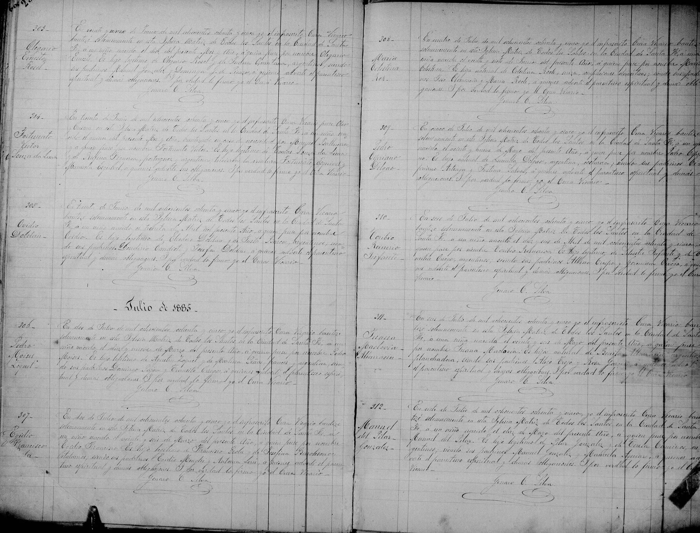

La historia
María Celestina es la primogénita del núcleo argentino — y la única con el apellido de la madre. Nació en la ciudad de Santa Fe el 27 de junio de 1885 y fue bautizada el 4 de julio en la Iglesia Matriz de Todos los Santos como «hija natural de Celestina Roch, suiza», dedicada a los quehaceres domésticos. El acta no nombra padre. Pero los padrinos hablan: José Clemencio — casi con certeza José Clemenzo, hermano de Francisco (François Clemenzo) y pareja de Mariana Roh (Marianna Roh), hermana de Celestina — y María Roch, que podría ser la propia Mariana.
El censo de Colón de 1895 la muestra diez años después como hija del hogar de Francisco Clemenzo: «Celestina, 8 años, argentina, Entre Ríos», bajo las filas de Francisco (36, casado, suizo, colono) y Celestina (28, casada, 5 hijos tenidos, 9 años de matrimonio). Esa columna es la clave de todo: el matrimonio de sus padres data de ~1886, meses después de su nacimiento — por eso el bautismo la da «natural» sin padre y por eso quedó registrada como Roh. Los «5 hijos tenidos» cierran exactos con ella, Francisca (Francisca Clemenzo), Pedro (Pedro Clemenzo), León (Leon Francisco Clemenzo) y Félix (Felix Clemenzo).
Después del censo de 1895, su rastro se corta: ni matrimonio, ni defunción, ni aparición en actas posteriores de la familia.
Cronología
| Año | Fuente | Qué dice |
|---|---|---|
| 1885 | Acta de bautismo N.º 308, Iglesia Matriz de Todos los Santos, Santa Fe | Nace el 27 de junio; bautizada el 4 de julio como «María Celestina, hija natural de Celestina Roch, suiza» — sin padre declarado; padrinos José Clemencio y María Roch; cura Genaro C. Silva |
| ~1886 | Deducción del censo de 1895 («9 años de matrimonio») | Sus padres Francisco y Celestina se casan — meses después de su nacimiento |
| 1895 | Censo de Colón, pág. 1, filas 13–15 | «Celestina, 8 años, argentina, Entre Ríos», hija del hogar de Francisco Clemenzo (36, casado, suizo, colono) y Celestina (28, casada, 5 hijos tenidos, 9 años de matrimonio); los demás hermanos siguen en la pág. 2 |
| post-1895 | — | Sin rastro documental: ni matrimonio, ni defunción, ni menciones en actas familiares posteriores |
Qué falta / hipótesis
Líneas de investigación
- Acta de matrimonio de Francisco Clemenzo × Celestina Roh (~1886, ¿Santa Fe? ¿Colón/San José?): fechar la boda y ver si legitima o reconoce hijos nacidos antes
- Revisar el margen del acta de bautismo N.º 308 en el original (Santa Fe) por nota de legitimación o rectificación posterior
- Rastro adulto de María Celestina: índices de matrimonios de Santa Fe y Entre Ríos (~1900–1915), censo 1914, defunciones — junto con Francisca (Francisca Clemenzo) y Pedro (Pedro Clemenzo), los tres perdidos post-1895
- Identificar a la madrina «María Roch»: ¿Mariana (Marianna Roh)? ¿María Luisa (María Luisa Roh)? Cotejar con los bautismos santafesinos de la época
Fuentes
- Acta de bautismo N.º 308, Iglesia Matriz de Todos los Santos, Santa Fe, 4-07-1885
- Censo Nacional de 1895, depto. Colón, Entre Ríos — páginas 1 (hogar, filas 13–15) y 2 (hermanos)
Documentos
